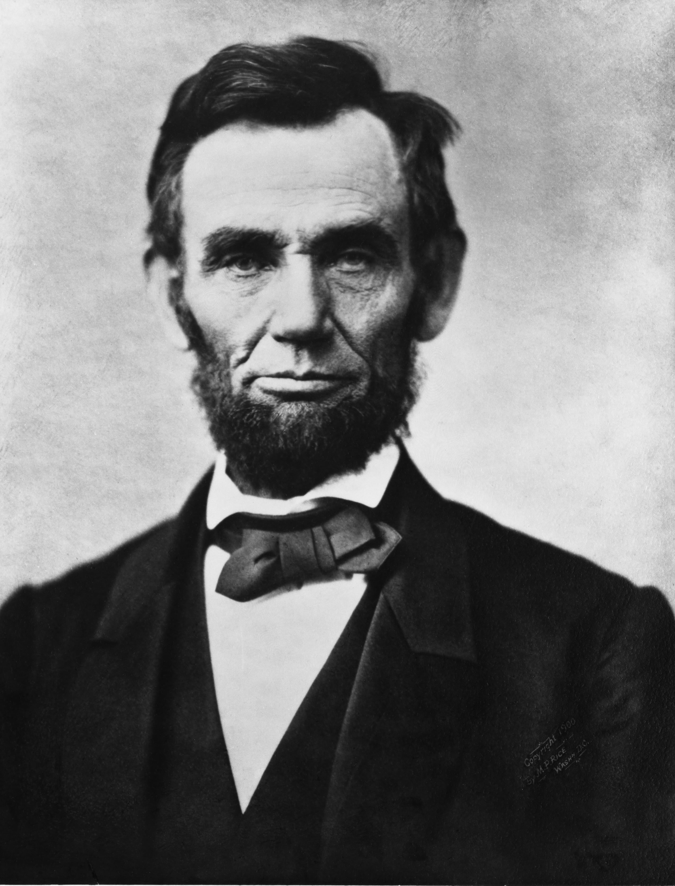

Lincoln and Kennedy Coincidences
Not long after the assassination of President John F. Kennedy in 1963, the a list of seemingly amazing coincidences between the two men’s lives appeared, and it has been widely and continuously reprinted and circulated ever since:
- Abraham Lincoln was elected to Congress in 1846.
- John F. Kennedy was elected to Congress in 1946.
- Abraham Lincoln was elected President in 1860.
- John F. Kennedy was elected President in 1960.
- The names Lincoln and Kennedy each contain seven letters.
- Both were particularly concerned with civil rights.
- Both wives lost their children while living in the White House.
- Both Presidents were shot on a Friday.
- Both were shot in the head.
- Lincoln’s secretary, Kennedy, warned him not to go to the theatre.
- Kennedy’s secretary, Lincoln, warned him not to go to Dallas.
- Both were assassinated by Southerners.
- Both were succeeded by Southerners.
- Both successors were named Johnson.
- Andrew Johnson, who succeeded Lincoln, was born in 1808.
- Lyndon Johnson, who succeeded Kennedy, was born in 1908.
- John Wilkes Booth was born in 1839.
- Lee Harvey Oswald was born in 1939.
- Both assassins were known by their three names.
- Both names are comprised of fifteen letters.
- Booth ran from the theater and was caught in a warehouse.
- Oswald ran from a warehouse and was caught in a theater.
- Booth and Oswald were assassinated before their trials.
Comments